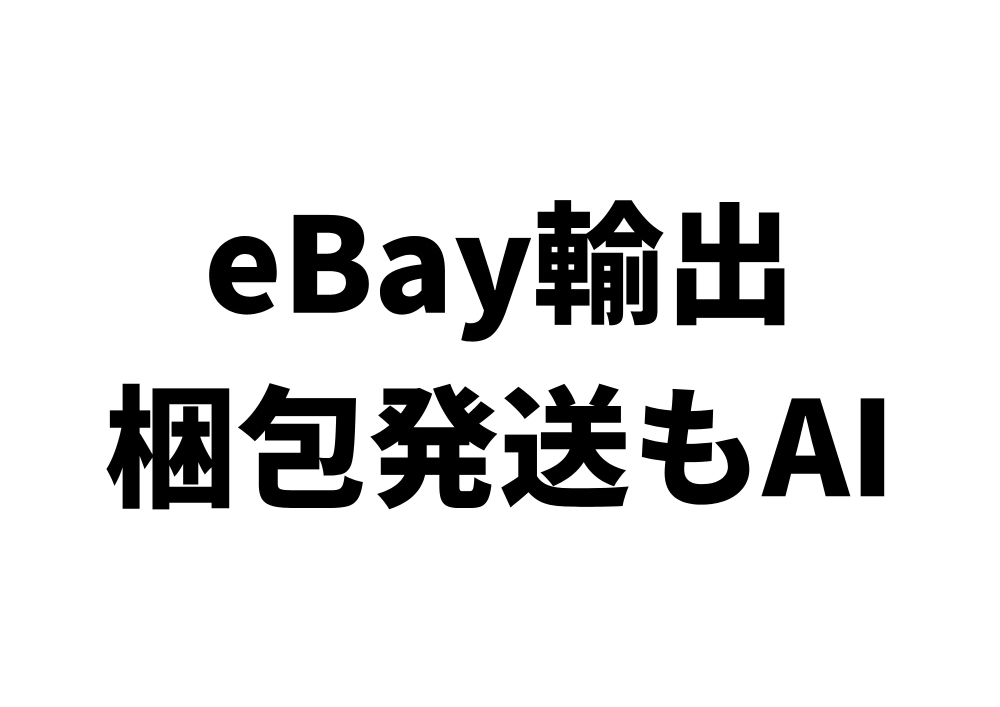
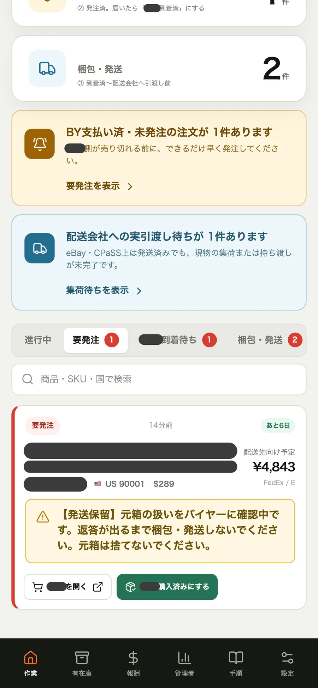
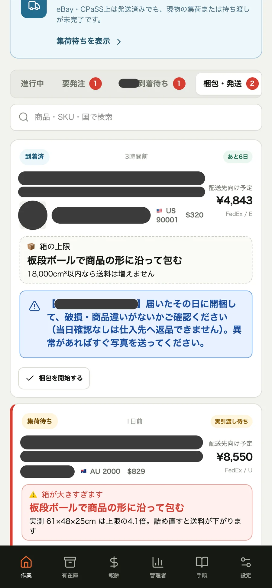
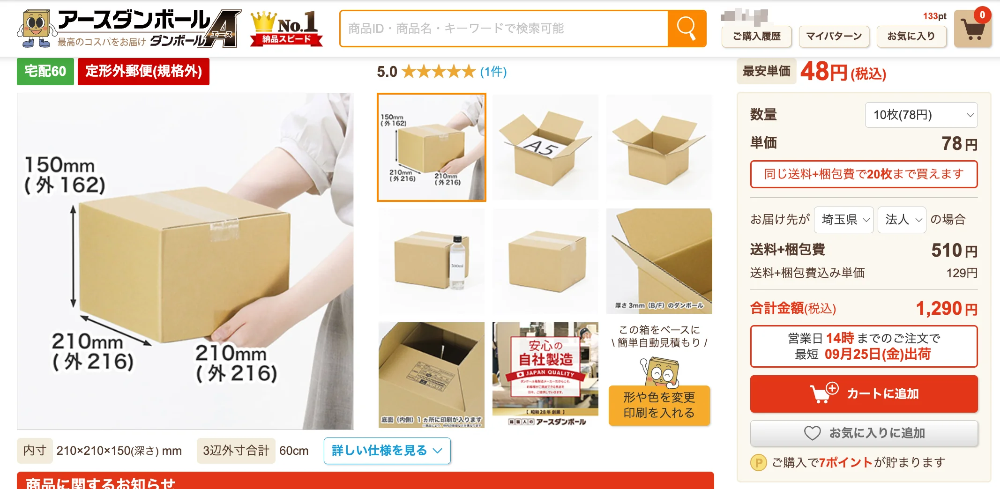
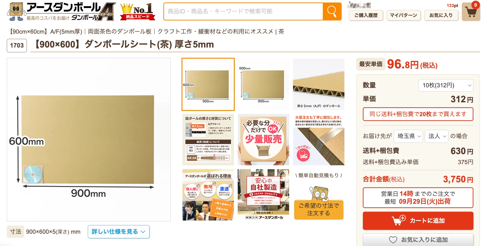
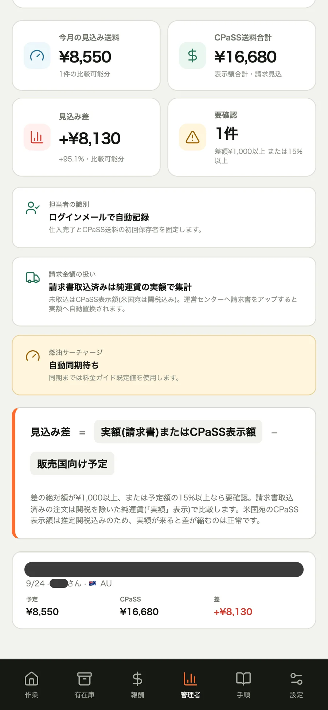
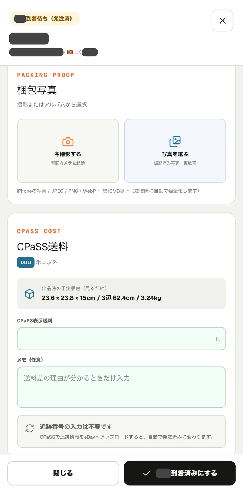
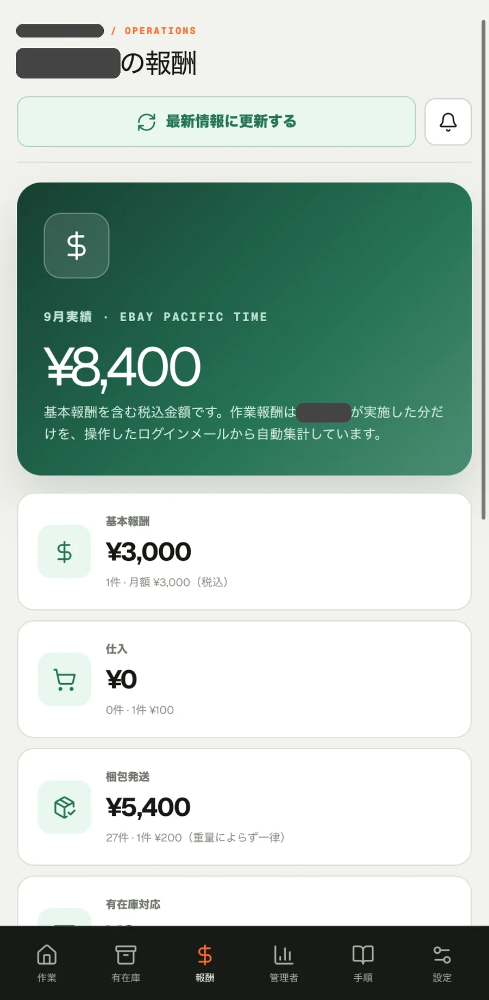
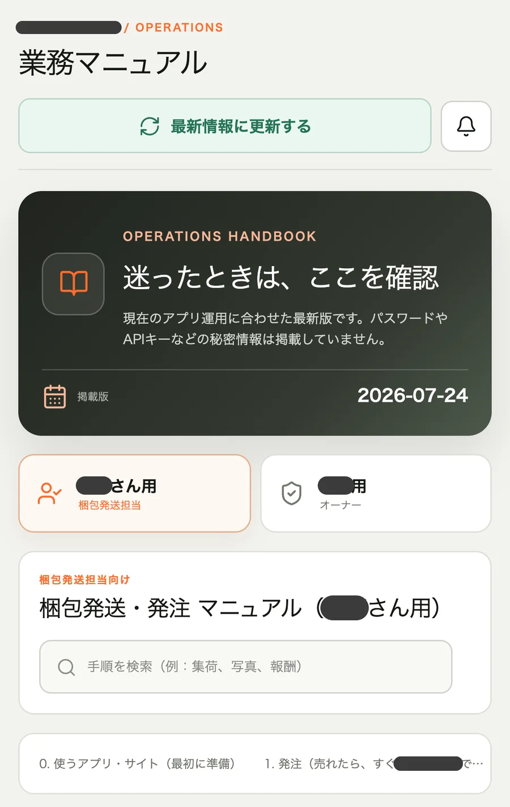
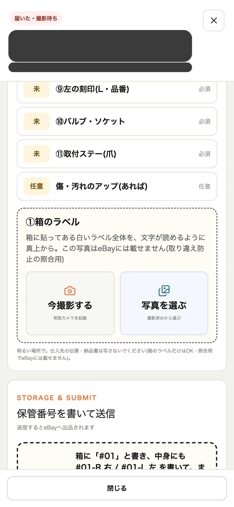

ぼくのeBay無在庫の店で、AIにできない仕事は2つだけです。
仕入れと、梱包発送。
AIには手足がありません。
箱に詰めることも、DHLさんやFedExさんに荷物を渡すこともできない。
仕入れも、カード決済のワンタイムパスワードがあるので、人間がやるしかありません。
じゃあ、梱包発送はAIと関係ないのか。
そんなことはないです。
梱包発送もAIで効率化できます。
ぼくの店は、AI社員が20名、人間は梱包発送の外注さん1人だけです。
その外注さんとぼくは、AIに作ってもらった梱包発送のアプリでやりとりしています。
今日は、そのアプリの中身を全部見せます。
売れたら、アプリが「要仕入れ」を出す
eBayで商品が売れると、アプリに通知が来ます。
画面には「要仕入れ」と出ます。
タップすると、仕入れ元の商品ページに飛べる。
あとはカードで決済して、「仕入れ完了」のボタンを押すだけです。

※画面は見本データ(架空の注文)です
仕入れを忘れていると、ずっと「要仕入れ」のまま残ります。
だから忘れようがない。
それでも忘れていたら、「まだ仕入れていませんよ」とAIから通知が来ます。
無在庫は、売れてから仕入れる商売です。
仕入れ忘れは、そのまま発送の遅れになります。
ここを人間の記憶にたよらないのが、1つ目の効率化です。
梱包の「枠」を、アプリで指示する
仕入れた商品は、外注さんの家に届きます。
外注さんは、それを海外向けに梱包し直して発送します。
ここで大事なのが、送料です。
リサーチのとき、AIは利益計算をしています。
その中で「送料はこれくらい」と見込んでいる。
実際の送料がこの見込みから大きくずれると、想定していた利益が出ません。
だから、アプリには梱包の「枠」を出しています。
- 利益計算のときに見込んだ送料
- 縦・横・高さ(cm)と、重さ(g)
「梱包したら、この数字以内にしてくださいね」という指示です。

※画面は見本データ(架空の注文)です。枠を超えると赤で「箱が大きすぎます」と出ます
資材は、段ボール1サイズと板段ボールだけ
梱包の資材も、しぼっています。
段ボールは1サイズだけ(21×21×15cm)。
あとは、板段ボールです。


段ボールに入るものは、段ボールに入れる。
入らないものは、板段ボールで形を整えて包む。
こうすると、むだな空きのない梱包になります。
もちろん、仕入れ元の段ボールの状態がよくて、海外発送に耐えられるなら、そのまま使います。
とにかく、見込んだ大きさ・重さ・送料で送れるように。
その指示を、アプリの画面で出しています。
見込みと実際の送料の差も、アプリで見る
発送したあとは、見込みの送料と、実際にかかった送料を突き合わせます。
たとえば、見込み7,000円の商品が、実際は8,000円かかった。
するとアプリに「+1,000円」と出ます。
商品ごとにも見られるし、今月ぜんぶでいくらずれたかも見られます。

※画面は見本データ(架空の注文)です。差の金額も見本の数字です
この管理ページは、外注さんも見られます。
抑止力、と言ったら大げさですけど、「気をつけよう」という意識づけにはなっているかなと思います。
写真を撮って、送料を入れて、完了ボタン
梱包が終わったら、外注さんはアプリで梱包の写真を撮ってアップします。
これは、あとで証拠にするためです。
返品のときの「すり替え」や、「梱包が悪かった」というクレームが来たときに、この写真を出せます。
次に、発送です。
ぼくの店はCPaSS(eBay公式の発送サービス)を使っています。
CPaSSに出た送料の見積もりを、アプリに入力して、「梱包完了」ボタンを押します。

そこから先はCPaSSの操作です。
HSコードや、税関に出す商品名を整えて、集荷を呼んで、渡す。
発送されると、その商品はアプリのやることリストから消えます。
これで、1つの商品の発送が完了です。
発送期限は、3営業日にしています。
期限が近づいたら、アプリがアラームを出します。
報酬明細も、マニュアルも、アプリの中
外注さんには、報酬が発生しますよね。
この明細も、アプリで自動で作っています。
うちの報酬は、2つの合計です。
- 基本報酬(荷物を受け取る・梱包の資材を保管する、といった基本の手間のぶん)
- 1件いくらの出来高
梱包の状況から、件数は勝手にカウントされます。
数えるのは、外注さんがやった分だけ。
もしぼくがやった分があれば、それは除外されます。
月が締まったら、ぼくはそれを見て振り込むだけ。
外注さんは、報酬明細をPDFでダウンロードできます。

梱包のやり方、発送のやり方、アプリの使い方。
このマニュアルも、アプリの中で読めるようにしています。
わからないことがあっても、アプリの中で完結します。

次は、有在庫もアプリで回す
いま、有在庫(先に仕入れて手元に持っておく販売)も始めています。
有在庫は、まだぼくが自分でやっています。
運用がうまく回るようになったら、外注さんに在庫を預けて、発送までやってもらう予定です。
有在庫は、商品が届いたら、写真を撮って出品します。
この出品用の写真を、アプリで撮れるようにしました。
「こういう写真を撮ってね」という指示つきです。

※画面は見本データ(架空の注文)です
外注さんが指示どおりに撮る。
その写真をAIが吸い上げて、自動で出品する。
届いた商品には番号を付けて、在庫を管理してもらいます。
売れたら、その番号の商品を出して発送してもらう。
梱包は人間。そのまわりはアプリ
梱包発送そのものに、AIを使うのはむずかしいです。
手がないので。
でも、効率化はぜんぜんできます。
仕入れの通知。
梱包の枠の指示。
送料のずれの記録。
報酬の明細。
箱に詰めるのは、人間。
そのまわりの事務は、ぜんぶアプリ。
あなたの店の梱包発送、外注さんへの指示はどこで出していますか?🐹
▶ 唯一の人間の仕事「梱包発送」も、AIが作ったアプリで回しています
▼中の人🏠(レンタルスペース23部屋・売上1.5億)のレンスペ実録
https://note.com/rentalspace_kiku
▼ブログ(eBay×レンスペ、全記事まとめ)
https://rental-space.net
▼この店のやり方は、ぜんぶ1冊にまとめてあります
リサーチ・出品・値付け・顧客対応まで、初月利益10万4,286円を出した実店舗の記録と手順を全部書いた教科書です。
読んだその日から、AI社員の作り方をそのまま真似できます。
『AI × eBay輸出の教科書 — 梱包以外、ぜんぶAI』
https://rental-space.net/kyokasho/ebay/
販売価格は3部売れるごとに2,000円ずつ値上がりします（上限あり）。内容・最新価格は販売ページをご確認ください。